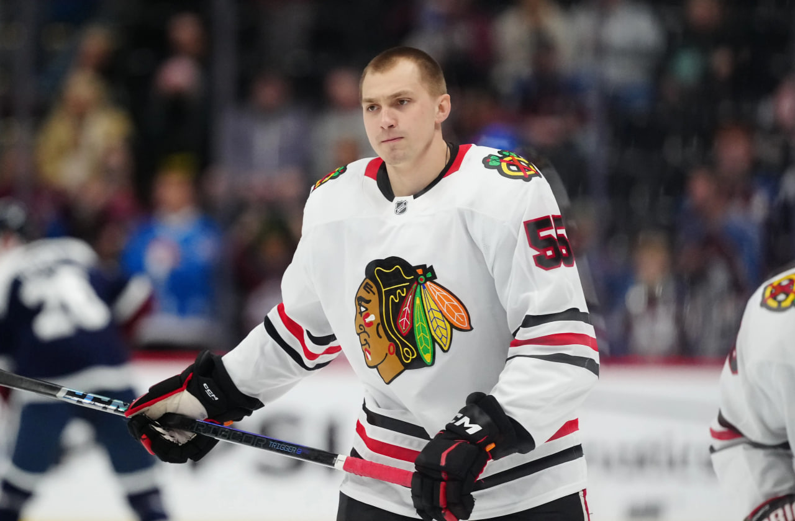

Хоккей
Артём Левшунов — белорусский хоккеист, защитник, один из самых перспективных молодых игроков из Беларуси, выбранный на драфте НХЛ 2024 года под 2-м номером клубом «Чикаго Блэкхокс».
Артём родился в Жлобине и начал заниматься хоккеем примерно в 4 года — его вдохновил пример старшего брата Кирилла. Первые навыки катания ему прививал отец, а тренироваться Артём начал в Центре олимпийского резерва Жлобина. Его первый тренер Сергей Римашевский отмечал, что уже в детских турнирах Артём выделялся надёжностью и лидерскими качествами. В 13 лет на Левшунова обратил внимание агент Дэн Мильштейн, после чего начались просмотры и шаги к переезду в Северную Америку.
В 2022 году Левшунов переехал в США и начал играть в USHL за «Грин-Бэй Гэмблерс». В сезоне-2022/23 он набрал 42 очка в 63 матчах — это лучший результат среди защитников до 18 лет в истории лиги. Затем Артём перешёл в студенческий хоккей: он стал игроком команды Мичиганского университета. В сезоне-2023/24 Левшунов набрал 35 очков в 38 матчах и помог команде выиграть чемпионат конференции Big Ten.
На драфте НХЛ 2024 года Артём был выбран «Чикаго Блэкхокс» под 2-м номером — это рекордный результат для белорусских хоккеистов. После драфта Левшунов начал сезон в АХЛ в составе «Рокфорд АйсХогс». Ближе к концу регулярного чемпионата НХЛ «Чикаго» дал Артёму шанс в главной лиге. Он дебютировал в НХЛ в матче против «Колорадо», став самым молодым белорусским хоккеистом, сыгравшим в лиге. В дебютной игре он провёл на льду 20 минут 55 секунд.
Левшунова выделяют: катание, умение читать игру, игра с шайбой и высокая самоотдача. Обладая отличным катанием и габаритами, он способен эффективно действовать как в обороне, так и подключаться к атакам. Его стиль игры часто сравнивают с манерой ведущих защитников НХЛ.